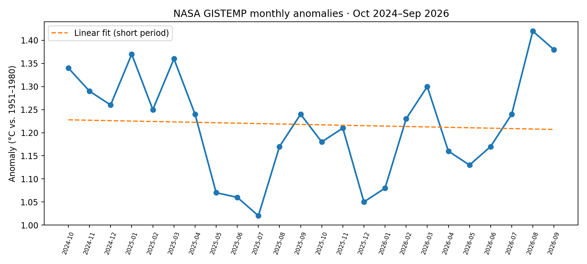

Research question
What do recent global temperature anomalies tell us about climate variability?
Completed analysis · 24 verified published monthly values
An original, reproducible calculation and visualization of a limited excerpt of NASA GISTEMP global temperature anomalies.
The 2025 mean anomaly across 12 months was +1.185°C relative to 1951–1980. The Jan–Sep 2026 mean was +1.234°C. These cover different numbers of months and should not be compared as full-year values.
The 24-month fitted slope was -0.011°C/year. A two-year slope is not a reliable estimate of long-term climate change.

Transcribed the 24 published monthly anomalies, computed descriptive means and a linear fit, and plotted the original chart using Python. The values come from a tracker reproducing NASA GISS data; no invented measurements.
Download data excerpt (CSV) · Download Python analysis
NASA GISS/GISTEMP v4 · Published monthly values (Green Decades)
What do recent global temperature anomalies tell us about climate variability?
Global temperature anomalies compare observed temperature with a reference average.
I examined a 24 month NASA GISTEMP excerpt and graphed monthly anomalies.
The series shows month to month variation within a period of elevated global temperature anomalies.
A short excerpt alone cannot establish a long term climate trend. A longer record is needed for that conclusion.
Open the editable research workbook in Google Sheets and the presentation in Google Slides by uploading the downloaded files to Google Drive.
A limited excerpt; source figures should be checked against NASA before publication.
Download the published values used in this project and my presentation of the findings.
Limitations: The 24 observations describe a short window and cannot establish a long term trend by themselves.